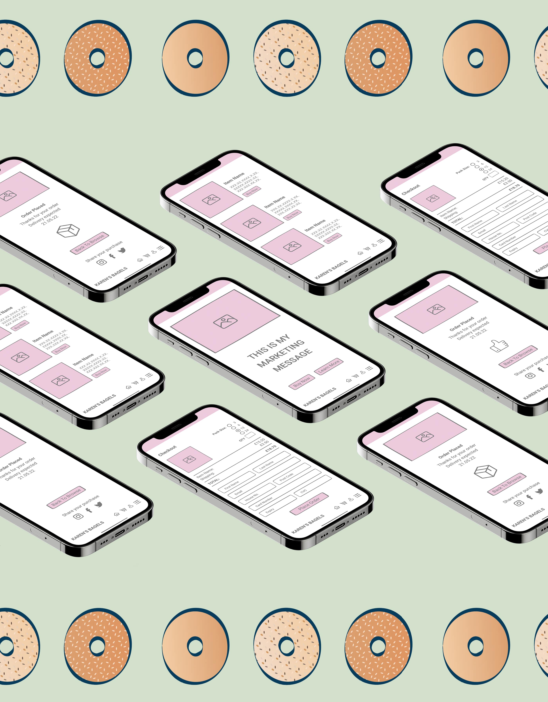
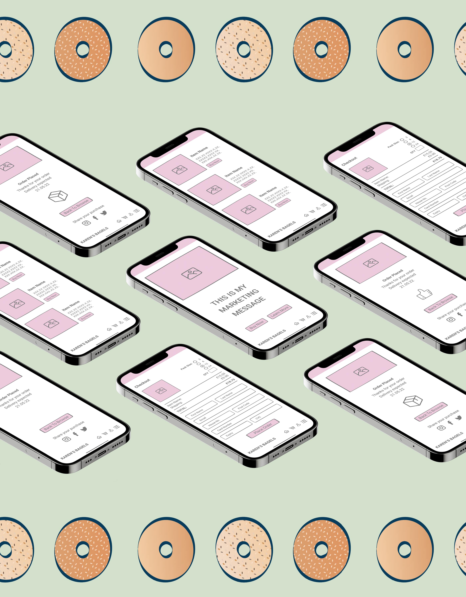

Karen's Bagels
Project Type: Branding, App Design, Web design
Brief: Karen's Bagels is a small local business in Liverpool that delivers Bagels to your door. We found that Karen's ideal customer
is a single female in their early 20s, who enjoys responsibly sourced, handcrafted items. A strong brand identity was required that incorporates the owners love of 60s diners.
A clean app design and mobile-first web option were also needed.
Comments: The idea for Karen's branding was to create a striking mix of the nostalgic and modern, to evoke feelings of both
classic homemade items and a responsible health conscious company. The mix of a more vintage colour palette and modern design aesthetics
works well for a brand that wants to appeal to a young adult in 2022. The layout and interactivity of both the app and web was kept simple and intuitive,
allowing the product and the users to be the focus.

 
